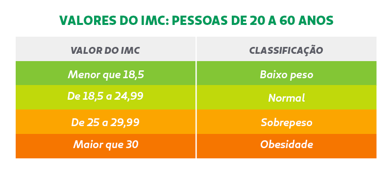

O que significam os resultados do IMC?
Após descobrir o valor calculando o IMC (você pode calcular aqui), podemos comparar ele com a tabela de referência. Ela tem o resultado e o que ele possivelmente indica:
- Abaixo de 18.5: Abaixo do peso
- Entre 18.5 e 24.9: Peso normal (peso ideal)
- Entre 25 e 29.9: Sobrepeso (excesso de peso)
- Entre 30 e 34.9: Obesidade Grau I
- Entre 35 e 39.9: Obesidade Grau II (severa)
- Acima de 40: Obesidade Grau III (mórbida)

O que fazer com esses resultados?
Tudo depende do resultado que você teve no seu IMC.
1. Se estiver fora do peso ideal (Sobrepeso ou Obesidade)
- Busque orientação profissional: Agende uma consulta com um nutricionista ou endocrinologista. Eles farão uma avaliação detalhada da sua composição corporal (como exames de bioimpedância) e solicitarão exames de sangue.
- Evite dietas restritivas por conta própria: O foco deve ser a reeducação alimentar, com foco em vegetais, grãos integrais, proteínas magras e controle de porções.
- Aumente o gasto calórico: Comece a praticar exercícios físicos regulares, com supervisão profissional, para reduzir a gordura corporal e melhorar o condicionamento.
- Atenção à saúde: Dependendo do seu IMC e histórico, medicamentos ou cirurgia bariátrica podem ser discutidos com o médico.
2. Se o resultado indicar Baixo Peso
- Consulte um profissional: Pode indicar desnutrição, falta de nutrientes essenciais ou problemas hormonais. Um nutricionista ajudará a montar um plano para ganho de peso saudável.
- Aumente a ingestão de calorias de qualidade: Priorize alimentos ricos em nutrientes e calorias, como nozes, abacate, laticínios integrais, azeite e proteínas, em vez de alimentos ultraprocessados.
3. Se o resultado estiver no Peso Normal
- Mantenha hábitos saudáveis: Continue com uma alimentação balanceada, hidratação adequada e a prática de exercícios para preservar sua saúde a longo prazo.
- Monitore o peso: Suba na balança uma vez por mês e tente manter o acompanhamento com um médico de rotina.
Alertas importantes:
- O IMC não diferencia massa muscular de gordura
- Atletas ou pessoas com alto percentual de massa muscular podem apresentar um IMC de "sobrepeso", mesmo estando extremamente saudáveis.
- O IMC não é recomendado para gestantes, crianças (que possuem curvas de crescimento específicas), idosos ou pessoas com retenção de líquidos.